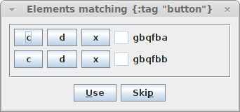
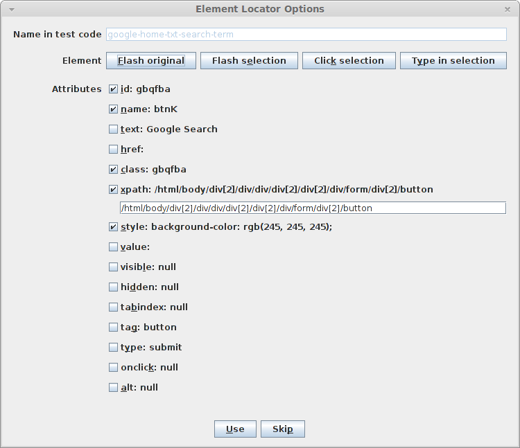
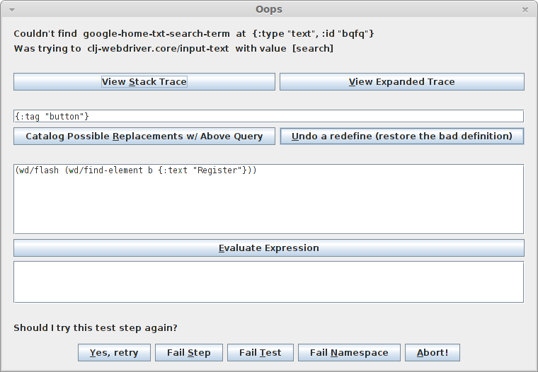
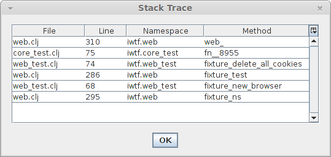

iwtf: an interactive web test framework
Table of Contents
- 1 Introduction / Rationale
- 2 Defining Web Element Locators
- 3 Defining a Single Locator
- 4 Defining Tests
- 5 Running Tests
- 6 Configuration
- 7 Test Framework API (and Implementation)
-
-
- 7.1 go (to a URL)
- 7.2 enter (typing text in a field)
- 7.3 clear
- 7.4 pickt (selecting from drop-down list by text)
- 7.5 pickv (selecting from drop-down list by value)
- 7.6 selected? (selecting from drop-down list by value)
- 7.7 check (checkbox)
- 7.8 click
- 7.9 wait for an element to be visible
- 7.10 getting the text of an element
- 7.11 getting the value of an element
- 7.12 getting the class of an element
- 7.13 testing if an element is present
- 7.14 waiting for a condition to be true
- 7.15 exiting iframes, selecting the root document
-
-
- 8 When a Test Step Fails (Implementation)
- 9 Fixing Failing Tests
- 9.1 Implementation
- 9.1.1 Making Attribute Checkboxes for the Dialog
- 9.1.2 Getting the Result: Name and Query
- 9.1.3 Getting the Resulting Query
- 9.1.4 Testing the Resulting Query
- 9.1.5 Handling the Name
- 9.1.6 Defining the Locator
- 9.1.7 Updating locators.clj
- 9.1.8 Constructing the Dialog
- 9.1.9 Entry Point for Maintaining Tests Use Case
- 9.1 Implementation
- 10 Tips and Best Practices
1 Introduction / Rationale
iwtf is an interactive web test framework. I created it because I
felt the need to improve my team's experience of maintaining automated
web tests, especially if the element locators for the web site under
test changed frequently.
1.1 Without iwtf
Here's the old experience: You kick off your test suite and move on to another task while it churns away. At some point you check on how it's doing and you find that there are a lot of failures and stack traces. Maybe the tests are still running. Or maybe they're all finished. In any case, all the browsers for the failed tests have closed and all you have to work with are stack traces and log files.
Sometimes you have to run a test again and step through a debugger just to see what happened. Or maybe you manually recreate the test so that you can poke around with Firebug on the page/step in question.
Often you see that many tests failed because they relied on the same out-of-date web element locator. Usually the number of fixes seem small in comparison to the number of failures and you find yourself iterating a loop of: run, debug, fix, compile, run… It starts to feel like peeling an onion one layer at a time.
1.2 With iwtf
Here's the experience with iwtf: you kick off your test suite and it
churns away until the first failure to find an expected web element.
Everything pauses and a dialog box appears which allows you to (1)
view the expanded stack trace which shows all the source code
for every function from all scopes down to the line that failed, (2)
fiddle with the browser which is still alive, on the web page that has
the failure, and which might even support Firebug, (3) redefine the
web element locator in question, (4) retry the failed test step, or
(5) skip the current test, current suite, or all remaining tests.
The features of iwtf which help you with (3) above can also be used
when creating tests in the first place. iwtf can present a catalog
which allows you to define web element locators for the current page
without requiring you to write much code at all.
You're still dealing with many layers of an onion but now each layer should be easier to deal with since you're able to interact with the browser at the point of failure and fix issues dynamically without recompiling or even visiting the code directly to follow a stack trace or edit an element locator.
1.3 Important Notes and Current Limitations
iwtf is implemented as a literate programming project. This
means everything is communicated in a natural/human language like
English in a sequence intended for another human to comprehend. Code
snippets appear inline when appropriate. So all concepts and code are
in human-order, not compiler-order. Actual code files are re-sequenced
from these snippets for the compiler. And a formatted document for
reading (such as this web page in HTML) is also an output. Ideally,
any new contributor merely has to read this one document carefully to
get up to speed.
This is one of my early attempts at literate programming so yes, there are sections of code that were developed "normally" and thus aren't explained as thoroughly. One section that demonstrates literate programming is When a Test Step Fails (Implementation).
Any time you see bold text, it's likely an anchor that gets linked to from elsewhere in the document. I made it bold in the HTML with a CSS style so that it gets your attention when you arrive after clicking a link.
Currently only Firefox testing is supported with iwtf. Other browsers
can be supported with some code changes.
Here are the layers involved:
- the Clojure code
- a Clojure library called clj-webdriver (official site)
- Selenium WebDriver, a Java library (official site)
- Firefox browser
This framework does not require you to launch a Selenium service (like a remote control server or a grid hub plus nodes) separately. We have the clj-webdriver library launch the browser that it needs in a test fixture, so tests simply assume the browser is available.
This currently does not support Selenium Grid. (Popping up a dialog
box on your machine for a browser and a failing test on some remote
machine x seems problematic. I suppose iwtf could place the failing
test in a queue, and then process the queue FIFO by restarting a
failing test on your machine and behaving normally from there. Then
you would have the benefit of parallized testing and having failures
brought to your machine for interactive fixing.)
Currently the iwtf leiningen project is a template for a testing
project; tests exist inside the iwtf project (vs your project
pulling in iwtf as a library/dependency). iwtf could be turned
into a library…
2 Defining Web Element Locators
2.1 The Catalog
Creating tests within iwtf begins with defining element locators on
the web pages under test.
The utility for exploring a web page and constructing element locators
for Selenium use is called the catalog. You can use the catalog to
define element locators before you write tests. And you can use it
when you're updating a locator for a test that would otherwise fail.
Without catalog, you would poke around web pages with Firebug and
then write test code. Or you would use Selenium IDE and the locators
would all be hard-coded in the recording (vs being named variables
with values that are easier to maintain and reuse).
The catalog saves labor and time spent on human error (like fixing
typos). It does the work of writing code for you. You won't really
have to know how a locator is expressed in Clojure – you can just see
the format from the tool's output when it prints it out. You only need
to know enough to express a query that matches some family of html
elements (a query like {:tag "input"}).
And in the use case of fixing a locator on the fly while a test is running, you won't even have to hand-edit the file where locators are defined. (The tool finds the file and edits it for you, and redefines the variable for the tests as well so when you resume, tests pass.)
2.2 Usage
We have a catalog (a dialog) that is launched with an element locator
query. An example query is {:tag "input"} which matches "all input
elements on the current page".
It displays a list of widgets for each matching element. The widgets allow you to interact with the elements and define locators for them. Here's what it looks like:

Each row corresponds to a single matching element on the current page. Each row has three buttons, a text field, and some text in a label.
The button labeled c causes the matching element to be clicked.
Normally you won't have to use this button, because the next button
labeled d causes the matching element to flash different colors for
a second when you hover over it. Some elements like checkboxes might
not flash colors. This is when you can use c to click the element so
you know which one it is.
If you click the d button, it pops up a second dialog box which
allows you to define a locator for the matching element.
If you define a locator, the definition appears in the read only text field. If
you want to clear it, you can click the x button.
The labels to the right are a shortened form of the element name or id (I forget which).
Here are the steps to follow to use the catalog . (If this seems like a lot of detail, it's because I was trying to communicate this to an offshore team originally.)
- In a REPL, in a namespace which refers to
iwtf.web-element-shopper, start a selenium controled Firefox browser by typing(begin). an instance of Firefox should start. There should be a label in the lower right corner that says WebDriver. And the Firebug plugin should also be available if it is supported by your version of Firefox. (If you wanted an entirely new profile you could use this instead:(begin-np)wherenpstands for new profile. The code refers to the browser started with these commands as*browser*. Currently it only supports a single instance at a time. - Navigate to the page you want directly in the browser
- In the repl, type something like the following:
(catalog *browser* {:type "text"} "google search" "txt")- You are calling a function named
catalog - You're telling the function to use your
*browser*instance - You're interested in all elements where the attribute
typeequals "text" (since firebug is available, that is one way to figure out what to put here… you could have said other things like{:id "foo"}for a particular element or{:tag "input"}for all input items or{:type "radio"}for all radio buttons or even combine things this way:{:class "highlighted" :href "/register"}. See clj-webdriver. - The next two arguments determine the beginning of the name of
this element locator in your code. The following describes my
convention; you can use some other convention if you wish. The
third argument is a string is where you describe the page you're on. It
can have either hyphens or spaces. This string becomes the
first part of the names of your element locators. In this
example, we want a catalog of all text fields on the Google
Search page. So the string here is:
google search - The last string is three characters that signify what kind of
element you're cataloging:
txtfor text fields,selfor drop-down lists,btnfor buttons,lnkfor links,txafor text areas,lblfor labels, etc. So with my convention and the arguments in the example above, the element locator's name will start withgoogle-search-txt-
- You are calling a function named
- That pops up the dialog like the one pictured above. Move the
browser and the dialog box so you can see them at the same time.
Now make sure the dialog box has the focus. Move the mouse slowly
over all the buttons labeled
dand see the elements flash on the page in the browser. When you see one that interests you, click thedbutton. If you don't see an element flash, you can try using thecbutton to click the element – watch the browser when you do this to see if you can tell which element it is. By the way, the list of elements presented in this dialog have been filtered down to the visible ones. There may be other elements that match your query that are invisible. - When this second dialog box appears, the focus should be in the
name field. Type the name of the locator. In this example, if you
type "search term" then eventually a locator named
google-search-txt-search-termwill get defined. You can use spaces andiwtfwill replace it with hyphens. For more details on this second dialog box, see the next section on Defining a Single Locator. - When you're done with this second dialog (you click Use or Skip)
go back to step 4 and repeat the process for any other
interesting elements – hover over
dbuttons, click, make your selections, click Use, repeat. - And when there are no more interesting elements in your current
catalog dialog box, check to see if you have any rows you want to
get rid of. Use the
xbutton to get rid of those. - Now click the
Usebutton. Go back to the REPL to see all the locators printed out. You'll see two lists. Every time you defined a locator, the system printed out the latest locator. And when you clicked the finalUsebutton on the catalog, it printed all the ones you finally kept. This second list is the one you're interested in. - If you like what you see, find a place for it in
src/iwtf/locators.clj. Currently all locators go here. To support stuff in separate files, the feature that redefines elements during a failing tests would have to know how to find the right file instead of just searching inlocators.clj
3 Defining a Single Locator
The web-element-shopper is a dialog box for defining a single
locator. Below is a screenshot of the shopper as it is used during
test maintenance – a test step has failed due to a bad element
locator and the tester is attempting to redefine the element locator.
In this use case, the name of the element locator is already known and
should not be edited. So the text field for Name in test code is
disabled. This text field contains the name that is used in the tests.

The dialog box is always associated with a single element on the
current page in a Firefox browser. This is true when you're fixing a
locator for a test as in the use case above and also true when you're
shopping for elements with the catalog before writing tests. The
Flash original button causes this element to flash on the page.
The basic idea is to choose attributes to include in the new locator
for this element using the checkboxes, such that the resulting query
specifies the same element as the original. The Flash selection
button causes the element that matches the resulting query to flash,
so you can see for yourself whether your resulting query matches the
original element.
click the use button : Once you think the query is satisfactory,
the Use button will check to see that your query matches the
original and if it does, it generates the locator definition. (The
Use button refuses to close the dialog box if your query does not
match the original element, so if you exit the dialog with a locator,
you can be assured that it works.)
The Skip button dismisses the dialog box and avoids generating the
locator definition.
When the dialog box first appears, the attributes that start off selected are those attributes which are capable of identifying the correct element without being combined with another attribute. For example, in the screenshot above, four attributes are selected: id, name, xpath, type. Each one by itself would constitute a sufficient query to match the correct element.
When I use this dialog, I usually do the following:
- make sure name field has the name I want
- uncheck all but one of these (usually
id) - and then click the use button
By the way, the name field trims all leading and trailing whitespace,
and then converts all spaces to hyphens. This means you can type
normally using spaces (example: "product description") and it will get
turned into a proper name within our system: product-description.
And as mentioned before, if you supply a common prefix (to indicate
the page that the elements are from) and type prefix (like "txt" for
text fields, etc), that is included automatically as well (e.g. all
you have to type is "product description" and it becomes
my-site-txa-product-description). This is done by
web-element-shopper/construct-name which you will see later.
3.1 Naming Conventions for Web Element Locators
Here's a convention I use for a part of a web element locator name:
txtfor text fieldstxafor multi-line text areaslblfor labels or plain text on the pagebtnfor buttonsselfor drop-down listsoptfor options in drop-down lists
If you know your initial query matches the one element you want, you can call web-element-shopper/shop directly.
If you want an entire catalog of all matching elements for your query, you can call web-element-shopper/catalog directly.
3.2 Usage: When Preparing to Write New Tests
example shopper usage : if you want to define locators for all
input elements on the current page, see the steps to follow to use the catalog.
3.3 Notes About Locators
Currently all locators are defined in locators.clj
Code currently assumes that a locator is defined on a single line like this:
(def google-lnk-advertising-programs {:text "Advertising Programs"})
And not like this:
(def google-lnk-advertising-programs
{:text "Advertising Programs"})
4 Defining Tests
Optional: edit locators.clj after using the catalog
to put in comments for groups of locators.
Create a file in test/iwtf/ to hold your test cases. You can take
core_test.clj as a model.
Here's the namespace declaration for an example test file.
(ns iwtf.test-core
(:use clojure.test
iwtf.config
iwtf.locators
iwtf.web
iwtf.web-common
iwtf.web-element-shopper
iwtf.web-test)
(:require [clj-webdriver.core :as wd]))
Here are the fixtures to include for a test suite / namespace where a single browser is shared among all tests, and cookies are deleted after each test (see implementation here). There are also fixtures for handling changes in the run mode: skip remaining steps in the current test, skip remaining tests in current namespace, abort all, etc (see implementation at web/fixture-ns and web/fixture-test).
(use-fixtures :once
fixture-ns ;; handles run mode
fixture-new-browser) ;; shared browser
(use-fixtures :each
fixture-test ;; handles run mode
fixture-delete-all-cookies)
Here's an example test, declared with deftest from clojure.test.
Note the use of macro lt instead of let. This macro is an
adaptation of let. Bindings happen normally. But if a test step
fails and the user changes the run mode, the lt skips the remaining
statements and returns whatever the body of the lt states.
In the example below, there is no body for lt so it returns nil.
Another thing lt does is wrap every value part of a binding pair in
a macro that expands out to code which tries the expression and
prompts the user if there is an exception. This is the interactive
part of iwtf.
For the interactivity and the run mode options to work, code has to be
within the value part of binding pairs in lt.
(I tried combining the state and maybe monads but then realized that
stack traces became a useless repetition of m-bind and m-result)
(deftest google-search
(lt [_ (go :url "http://google.com")
_ (enter google-home-txt-search-term "search")
_ (wait-until-visible? google-home-btn-google-search false 2)]))
You can define helper functions for common web tasks and return values
using lt statements.
See the web test API for the functions you can call such as the ones
above: go enter wait-until-visible?
4.1 Test Fixture: Browser
Here's how we create a new browser – in a fixture so that we can declare whether this happens at the beginning of every namespace or at the beginning of every test.
(defn fixture-new-browser
"clojure.test fixture creates a new *browser*. if the fixture is
used with :each, there will be a new browser for each test in the
namespace. with :once, all tests in a single namespace will share
the same browser. note: some namespaces can use :each while others
use :once. if you use :once, you should also use
fixture-delete-all-cookies as :each."
[f]
(binding [*browser* (new-firefox-browser)]
(f)
(end)))
4.2 Test Fixture: Cookies
Here's the fixture for deleting all cookies.
(defn fixture-delete-all-cookies "clojure.test fixture deletes all cookies from *browser* even if an exception occurs during the test(s)" [f] (f) (delete-all-cookies))
5 Running Tests
There are several ways to run your tests. Basically if you're familiar
with clojure.test you can skip this.
- In the REPL. Example: if your tests are in a namespace called
iwtf.foo-testyou can execute this:(run-tests 'iwtf.foo-test). You don't even have to make sure that the REPL is in the same namespace before you execute this. Unfortunately the results summary is a little sparse:{:type :summary, :pass 0, :test 1, :error 1, :fail 0} - If you want to run a single test or only some of the tests in a namespace, you can do this at the REPL with run-all-tests if you specify a regular expression to match on test names.
- From within a file. You can evaluate a call to
run-tests(the same kind of call in the REPL example above) by placing your cursor after the closing paren and typingM-e - In an emacs shell. Test result reporting seems best using this method. You can press
C-x mto start or enter the shell. Make sure you're in any of the project's directories. Then executelein test iwtf.foo-testto execute all the tests in the namespace. Orlein test iwtf.foo-test :wipto execute the tests marked with the^:wipwork-in-progress metadata tag. See the^:wipmetatadata in the example test definition below.
6 Configuration
6.1 Patience
There is a configurable period of time where the system keeps trying to find an element before giving up and displaying the initial dialog for a failed test step. You'd also see this same pause if you retry a test step with a bad locator.)
(def fudge-secs 2)
6.2 Debug Printlns
Sometimes we want to turn debugging printlns on. If true printlns
will happen wherever you use info.
(def debug true) (defmacro info [& args] `(if debug (println ~@args)))
7 Test Framework API (and Implementation)
7.1 go (to a URL)
The first thing a test case might want to do is go to a particular URL. Example:
(go :url "http://google.com" :delete-cookies false)
This uses keyword arguments so you can specify them in either order.
:delete-cookies defaults to true.
You should probably specify the fully qualified domain name if that's what your cookies are stored under. That way when you get to your site, it will use your cookies.
(defn go
"tells the browser to go to the specified :url.
:delete-cookies defaults to true."
[& {:keys [url delete-cookies]
:or {delete-cookies true}}]
(if delete-cookies (delete-all-cookies))
(wd/get-url *browser* url))
7.2 enter (typing text in a field)
Example of entering text in a text field:
(enter my-site-txt-email-address "fake@email.com")
- The first argument is the name of an element locator from
locators.clj. Technically you could use a literal locator like{:id "Email"}but there is no need to do that if you're using the shopper. - The second argument is the text to type.
Note: this method does not clear any existing value from the field before typing.
Here's the implementation of web/enter
(defmacro enter "enters text in the specified field. does not clear the field first." [attributes value] `(web ~attributes wd/input-text ~value))
It passes the locator, the action, and the value to another macro
web. The system tries the test step and if the locator is bad, gives
the user a chance to redefine the locator and try the step again. The
implementation of all this is explained ____ later.
7.3 clear
Example of clearing the text from a text field or text area:
(clear my-site-txt-password)
Implementation of web/clear
(defmacro clear "clears a field" [attributes] `(web ~attributes wd/clear))
7.4 pickt (selecting from drop-down list by text)
Example of selecting a choice from a drop-down list by the text of the option:
(pickt my-site-sel-state "California")
Arguments:
- The element locator for the checkbox.
- The text of the option to select.
Implementation of web/pickt
(defmacro pickt "finds a drop-down list ddl by 'attributes' and then picks the option matching the text" [attributes text] `(web ~attributes wd/select-by-text ~text))
7.5 pickv (selecting from drop-down list by value)
Example of selecting a choice from a drop-down list by the value of the option:
(pickv my-site-sel-state "0")
Arguments:
- The element locator for the checkbox.
- The value of the option to select. You can get the value by looking at the option inside the select element in Firebug.
Implementation of web/pickv
(defmacro pickv "finds a drop-down list ddl by 'attributes' and then picks the option matching the value" [attributes value] `(web ~attributes wd/select-by-value ~value))
7.6 selected? (selecting from drop-down list by value)
Example of testing whether an element is selected
(selected? my-site-opt-state)
Arguments:
- The element locator for the checkbox.
Implementation of web/selected
(defmacro selected? "returns whether the element is selected" [attributes] `(web ~attributes wd/selected?))
7.7 check (checkbox)
(check my-site-btn-accept-terms-of-use true)
Arguments:
- The element locator for the checkbox.
- Whether to leave the checkbox checked or unchecked.
The implementation of web/check checks the box and then if the second argument was false, toggles it unchecked.
(defmacro check
"leaves the specified checkbox in the state 'leave-checked'"
[attributes leave-checked]
`(do (web ~attributes wd/select)
(if (not ~leave-checked)
(web ~attributes wd/toggle))))
7.8 click
(click my-site-btn-submit-form)
Arguments:
- The element locator for the checkbox.
The implementation of web/click
(defmacro click [attributes] `(web ~attributes wd/click))
7.9 wait for an element to be visible
Here's how you can wait 120 seconds for a particular element to be visible:
(wait-until-visible my-site-btn-accept-terms-of-use 120)
Arguments:
- The element locator for the checkbox.
- How long to wait before throwing an exception. In our framework, the exception is caught and the user is prompted in case the locator needs to be redefined.
The implementation of web/wait-until-visible
;; this has to be public because of the macro that calls it.
(defn assert-visible?
"throws an exception if element is visible/not-visible as expected. returns true otherwise."
[element expected]
(if (= expected (wd/visible? element))
true
(-> (format "expected %s to be %s visible but it was otherwise" element expected)
Exception. throw)))
(defmacro wait-until-visible?
[attributes expected timeout-secs]
`(web ~attributes assert-visible? ~expected ~timeout-secs))
7.10 getting the text of an element
(text my-site-txt-field)
Arguments:
- The element locator for the checkbox.
The implementation of web/text
(defmacro text [attributes] `(web ~attributes wd/text))
7.11 getting the value of an element
(value my-site-txt-field)
Arguments:
- The element locator for the checkbox.
The implementation of web/value
(defmacro value [attributes] `(web ~attributes wd/value))
7.12 getting the class of an element
(get-class my-site-txt-field)
Arguments:
- The element locator for the checkbox.
The implementation of web/get-class
(defmacro get-class [attributes] `(web ~attributes (fn [e#] (wd/attribute e# "class"))))
7.13 testing if an element is present
The following is just a convenience method. It means we type less code to do the same thing.
(present? ma-aw-f-loans-lnk-0-confirmation-id)
Implementation:
(defn present?
"returns true if element is present"
[locator]
(->> locator
(wd/find-element *browser*)
wd/present?))
7.14 waiting for a condition to be true
Sometimes you expect something to be true within a certain timeframe. If it fails to become true fast enough you want the test step to fail. An example is if you're searching for a fulfillment instance in the admin portal and after clicking Refresh Page, you need to wait for the searh results to refresh.
(wait-for-condition (fn [] (= (:id a) (text ma-aw-f-loans-lnk-0-confirmation-id))) 5 100)
Arguments:
- your condition: a function that, when executed returns true or false
- the number of seconds you want to wait for this condition to become true
- the number of milliseconds between attempts to test your condition
The implementation of web/wait-for-condition
(defn wait-for-condition
"waits for f to return true or for timeout-secs to expire, polling
every poll-msecs. returns true if f became true before timeout-secs
expired. returns false if the timeout-secs expired."
[f timeout-secs poll-msecs]
(-> (loop [t 0]
(cond (f) true
(> (/ t 1000) timeout-secs) false
:else (do (. Thread (sleep poll-msecs))
(recur (+ t poll-msecs)))))
is))
7.15 exiting iframes, selecting the root document
If you are in an iframe (or just think you might be in one) such as the canvas iframe for an app on Facebook, and you want to select the outermost document instead (in order to click on other tabs or sign out etc) then use this.
(exit-iframe-select-root)
Arguments: none
The implementation of web/exit-iframe-select-root
(defn exit-iframe-select-root "moves focus to the outermost root document. use this if you're in an iframe (or if you think you might be) such as the fulfillment iframe in ma sw" [] (wd/switch-to-default *browser*))
8 When a Test Step Fails (Implementation)
8.1 Test Steps Wrapped in Retries
You may have noticed that a lot of the API functions have
implementations similar to this: (web locator action value)
The implementations are similar because they're all hand-offs: we are handing information about what we want to the system which will try to find the target element and, if that fails, the system prompts the user to redefine the locator before trying again.
The first part of the hand-off is where we make sure we have both the values for arguments as well as the names that were used for each argument. Here's web/web . There are 3 versions, making the value and the timeout optional arguments. (todo: see if Clojure's optional arguments can be used here in a macro)
(defmacro web
([locator action]
;;`(web- '~locator ~locator '~action ~action :insignificant :insignificant)
`(web ~locator ~action :insignificant))
([locator action value]
;;`(web- '~locator ~locator '~action ~action '~value ~value)
`(web ~locator ~action ~value fudge-secs))
([locator action value timeout-secs]
`(web- '~locator ~locator '~action ~action '~value ~value ~timeout-secs)))
Then we try to find the element and perform the action against it. If we can't find it we prompt the user for whether we should retry (after the user redefines the locator), fail the test step, or fail the entire test (abort). web/web-helper
Note: This has to be publicly available because the macros expand to expose calls to this.
(defn web-
[locator-s locator action-s action value-s value timeout-secs]
(if (nil? value)
:skip
(let [fstr "Could not find element %s at %s and user chose to fail %s"
fail (fn [response new-mode]
(set-mode new-mode)
(->> (format fstr locator-s locator response)
(is false)))]
(loop [finding (forgiving-find locator timeout-secs)]
(if (no-match finding)
(case (prompt locator-s locator action-s action value-s value (Exception.) *browser*)
:retry (recur (forgiving-find (eval (read-string (str "iwtf.locators/" locator-s))) timeout-secs))
:fail-step (fail "this step" :run)
:fail-test (fail "this test" :skip-test)
:fail-ns (fail "this namespace" :skip-ns)
:abort (fail "all remaining tests (abort)" :abort))
;; at this point we found the element
(if (= value :insignificant)
(apply action [finding])
(apply action [finding value])))))))
When we attempt to find an element, we try repeatedly for a while
before deciding it's really not there. I call it web/forgiving-find .
It waits for an expected element for config.fudge-secs before
throwing an exception.
(defn- forgiving-find
[a timeout-s]
(let [o (wd/find-element *browser* a)]
(if (no-match o)
(let [deadline (-> timeout-s time/secs time/from-now)]
(loop [p (wd/find-element *browser* a)]
(if (no-match p)
(if (time/after? (time/now) deadline)
webdriver-nil
(recur (wd/find-element *browser* a)))
p)))
o)))
web/no-match returns true if we get the canonical nil web element from clj-webdriver that signifies no match:
(defn no-match [finding] (= finding webdriver-nil) )
And here's our nickname for that canonical nil web element:
(def webdriver-nil #clj_webdriver.element.Element{:webelement nil})
8.2 Retry vs Other Options
As you saw above in web/web-helper if there is no match for our locator, we prompt the user and get back one of the responses below which can have an effect on our governing test framework mode (web/mode)
- Retry
- Leaves
modeunchanged as:run
- Leaves
- Fail Step but continue with test
- Leaves
modeunchanged as:run - We assert
is falseso thatclojure.testcounts it as a failed step
- Leaves
- Fail Test but continue with tests in namespace
- Changes
modefrom:runto:skip-test - Every test step is wrapped with a check that skips the step if
modeis not:run. That wrapper is put in place bylt. The name is similar toletbecause it is basically a clojureletstatement with a wrapper added for the computation of each binding. - There is a fixture that is executed after each test that resets
modeto:runif the value is:skip-test. That way any subsequent test in the same namespace sees:run. This is calledfixture-test.
- Changes
- Fail Namespace but continue with any other namespaces
- Changes
modefrom:runto:skip-ns - The wrapper for every test step mentioned above (
lt) handles skipping the rest of the test steps in the current test - There is a fixture that is executed before each test that skips
the test if
modesays:skip-testor:skip-nsor:abort. This functionality is actually in the same fixture asfixture-test - There is another fixture that is executed after each namespace
that restores
modeto:runif it is:skip=ns. That way any subsequent namespace sees:run. This isfixture-ns
- Changes
- Abort All
- Changes
modeto:abort - The wrapper for every test step mentioned above
lthandles skipping the rest of the test steps in the current test fixture-testskips all subsequent tests in the same namespacefixture-nsskips all subsequent namespaces- For later test runs, re-compilation will reset the
modeback to:run. It is possible to execute tests without recompilation so you'd have to remember to resetmodedirectly yourself in these cases.
- Changes
Currently we don't support running tests in parallel so whenever I want to change the mode, I can do so without regard to any race conditions.
Here's the mode for our test framework web/mode
(def mode (atom :run)) (defn set-mode [new-mode] (swap! mode (fn [old new] new) new-mode))
Here's web/lt where we wrap every test step to check the mode and skip accordingly.
(defmacro lt
"like clojure's let form but each binding and the return form might
be skipped if the mode dictates. this assumes the mode goes from
:run to something else up to once inside the eventual let and
doesn't switch back until after we exit the let."
([bindings form]
(loop [b2 []
bs bindings]
(if (empty? bs)
`(let ~b2 (if (= :run (deref mode)) ~form nil))
(recur (conj b2 (nth bs 0) `(if (= :run (deref mode)) ~(nth bs 1) nil))
(drop 2 bs)))))
([bindings]
(loop [b2 []
bs bindings]
(if (empty? bs)
`(let ~b2)
(recur (conj b2 (nth bs 0) `(if (= :run (deref mode)) ~(nth bs 1) nil))
(drop 2 bs))))))
Here's web/fixture-test where we can skip a test and where we
restore from :skip-test
(defn fixture-test
"skips the current test if indicated by mode. restores mode if only skipping one test."
[f]
(let [m (deref mode)]
(condp = m
:run (do (f) (if (= :skip-test (deref mode)) (set-mode :run)))
:skip-test (do (println "didn't expect :skip-test! restoring to :run") (set-mode :run) (f))
:skip-ns (println "skipped test because of :skip-ns")
:abort (println "skipped test because of :abort"))))
Here's web/fixture-ns where we can skip a namespace and where we
restore from :skip-ns
(defn fixture-ns
"skips the current ns if indicated by mode. restores mode if only skipping one namespace."
[f]
(let [m (deref mode)]
(condp = m
:run (do (f) (if (= :skip-ns (deref mode)) (set-mode :run)))
:skip-test (do (println "didn't expect :skip-test! restoring to :run") (set-mode :run) (f))
:skip-ns (do (println "didn't expect :skip-ns! restoring to :run") (set-mode :run) (f))
:abort (println "skipped namespace because of :abort"))))
Here's web/prompt where we get the user's response. It's long but not tricky. See the notes after the snippet.
(defn- prompt [locator-s locator action-s action value-s value exception browser]
(let [btn ui/action, wrap "wrap", blank [" " wrap], r ui/return-from-dialog
wide "span, grow" single "grow"
m1 (format "Couldn't find %s at %s" locator-s locator)
m2 (format "Was trying to %s with value [%s]" action-s value)
stac (btn :name "View Stack Trace" :mnemonic \s
:handler (fn [_] (show-stack exception)))
sta2 (btn :name "View Expanded Trace" :mnemonic \v
:handler (fn [_] (show-stack2 exception)))
cust (ui/text :text (pr-str locator) :id :custom-query
:font code-font)
cdef (btn :name "Catalog Possible Replacements w/ Above Query"
:mnemonic \r
:handler (fn [e] (make-replacement-locator browser locator-s (get-custom-query e))))
undo (btn :name "Undo a redefine (restore the bad definition)"
:mnemonic \u
:handler (fn [_]
(restore-locator-file)
(redefine-locator locator-s locator)))
tipf (str "<html>In %s, use b to refer to the browser.<br>"
"Lib clj-webdriver.core is aliased to wd.<br>"
"Edit or delete the example as needed.<br>"
"Click the Evaluate button. The result or exception<br>"
"will appear in the text area below.</html>")
exam "(wd/flash (wd/find-element b {:text \"Register\"}))"
expr (ui/scrollable (ui/text :id :expression
:tip (format tipf "this area")
:text exam
:multi-line? true
:font code-font))
evex (btn :name "Evaluate Expression" :mnemonic \e
:tip (format tipf "the area above")
:handler (fn [e] (eval-expression e browser)))
resu (ui/scrollable (ui/text :id :result
:tip "This is the result or exception from evaluating the expression above."
:multi-line? true
:font code-font))
retry (btn :name "Yes, retry" :mnemonic \y :handler #(r % :retry))
abort (btn :name "Abort!" :mnemonic \a :handler #(r % :abort))
fstep (btn :name "Fail Step" :mnemonic \s :handler #(r % :fail-step))
ftest (btn :name "Fail Test" :mnemonic \t :handler #(r % :fail-test))
fnspa (btn :name "Fail Namespace" :mnemonic \n :handler #(r % :fail-ns))
items [[m1 wide]
[m2 wide] blank
[stac single][sta2 wide] blank
[cust wide]
[cdef single] [undo wide] blank
[expr "span, grow, hmin 100"]
[evex wide]
[resu "span, grow, hmin 60"] blank
["Should I try this test step again?" wide]]
dlg (ui/dialog :title "Oops"
:content (mig/mig-panel :items items)
:options [retry fstep ftest fnspa abort])]
(-> dlg ui/pack! (ui/move! :to [0,0]) ui/show!)))
;;(do (require 'clj-webdriver.core) (binding [*ns* (the-ns 'clj-webdriver.core)] (eval 'flash)))
8.3 Redefining Element Locators
The most interesting bits involve redefining the locator. The buttons for redefining the locator call web-element-shopper/make-replacement-locator. So actually the interesting part has already been discussed.
The dialog box also allows the user to undo a redefine with
restore-locator-file (see web-element-shopper/locator-file). That
restores the file. The actual definition used within the current
run-time is restored with a call to
web-element-shopper/redefine-locator.
When the user types a custom query and clicks the second Redefine button, we use web/get-custom-query to get that query from the text field.
(defn- get-field-value [event id]
(-> event ui/to-root ui/group-by-id id ui/text))
(defn- set-field-value [event id value]
(let [field (-> event ui/to-root ui/group-by-id id)]
(ui/text! field value)))
(defn- get-custom-query [event]
(-> event (get-field-value :custom-query) read-string))
(defn- eval-expression [event browser]
(let [user (get-field-value event :expression)
expr (format "(try (do %s) (catch Exception exception exception))" user)
resu (try (do (require '[clj-webdriver.core :as wd])
((eval (list 'fn '[b] (read-string expr))) browser))
(catch Exception exception exception))]
(set-field-value event :result (pr-str resu))))
There's a button for View Stack Trace which calls web/show-stack. We use an artificial exception as a convenient way to get and pass around the stack trace. The exception came from the caller of web/prompt which created the exception.
Here's web/show-stack . It gets the stack trace from the exception, creates records with useful columns, removes any entries that are from calls to code we don't care about, and then calls web/show-table.
(defn- get-stack
"requires that `o' be throwable. returns a collection of maps. each
map is an entry in the stack trace. entries that are from the
following are skipped: swank, java, clojure. entries that have no
source file are also skipped. each map has a key-value pair for the
following: file, line, namespace, method."
[o]
(->> (.getStackTrace o)
(map (fn [e]
(let [c (map #(.toString %) (.split (.getClassName e) "[$]"))]
{:File (.getFileName e)
:Line (.getLineNumber e)
:Namespace (first c)
:Method (second c)})))
(remove #(contains-any (:Namespace %) ["swank." "java." "clojure."]))
(remove #(contains-any (:File %) ["NO_SOURCE_FILE"]))))
(defn get-relevant-source [file line namespace method]
(format "\nAt %s/%s (%s:%s)\n\n%s%s\n"
namespace method
(.replace file "/home/mint/workshop/iwtf/" "")
line
(with-open [rdr (clojure.java.io/reader file)]
(loop [lines (line-seq rdr)
result ""
n 0]
(let [next (try (first lines) (catch Exception e false))
remainder (if next (rest lines) false)]
(cond
(and next (< n line)) (let [new-result (if (.startsWith next "(def")
(str next "\n")
(str result next "\n"))]
(recur remainder new-result (inc n)))
lines result
(> n line) :no-such-line))))
"________________________________________________________________________________"))
(defn get-source [m]
(let [root "/home/mint/workshop/iwtf/"
path (if (.startsWith (:Namespace m) "iwtf.test")
"test/iwtf/"
"src/iwtf/")
full (str root path (:File m))]
(get-relevant-source full
(:Line m)
(:Namespace m)
(:Method m))))
(def code-font
(font/font :name (if (some #(= % "Consolas") (font/font-families))
"Consolas" "Monospaced")))
(def background "#002b36")
(def foreground "#839496")
(defn show-string
[title content]
(let [cont (ui/scrollable (ui/text :text content
:multi-line? true
:background background
:foreground foreground
:font code-font))
items [[cont "span, grow"]]
dlg (ui/dialog :title title
:content (mig/mig-panel :items items))]
(-> dlg ui/pack! (ui/move! :to [0,0]) ui/show!)))
(defn- show-stack-common
[o f]
(if (instance? Throwable o)
(f (get-stack o))
(ui/alert "Sorry. This isn't implemented yet for failures signaled via a false.")))
(defn show-stack2
"displays the source code for stack trace entries"
[o]
(show-stack-common
o
#(->> %
rest ;; getting rid of the wrapper source here
reverse ;; a more natural order for showing source
(map get-source)
(apply str)
(format "%s... end of expanded trace -- exception occurred here.")
(show-string "Expanded Stack Trace"))))
(defn show-stack
"displays a table of stack trace entries."
[o]
(show-stack-common
o
#(->> %
(show-table "Stack Trace" [:File :Line :Namespace :Method]))))
Here's how we show a table web/show-table . It's just mig layout stuff.
(defn show-table [title column-names rows]
(let [t1 (ux/table-x :model [:columns column-names
:rows rows]
:show-horizontal-lines? true
:show-vertical-lines? false
:fills-viewport-height? true)
t2 (doto t1 (.setHorizontalScrollEnabled true))
i [[(ui/scrollable t2) "grow"]]
d (ui/dialog :title title
:content (mig/mig-panel :items i :constraints ["fill"]))]
(-> d ui/pack! (ui/move! :to [0,0]) ui/show!)))
And here's how we check to see if one of our stack trace records contains any string that we're not interested in:
(defn contains-any [s v]
(if (empty? v) false
(or (.contains s (first v))
(contains-any s (rest v)))))
8.4 Investigating a Failure
This section is under construction and not implemented yet
When a web element cannot be found, we pop up a dialog box that supports these actions:
- Shop for a replacement locator by opening a catalog based on an arbitrary query from the user (implementation done)
- Evaluate arbitrary clj-webdriver calls (work in progress). Examples:
- causing elements to flash
- inspecting other results as seen by clj-webdriver
9 Fixing Failing Tests
The iwtf web test framework pauses a test if it
cannot find a given element. This allows a test maintainer to explore
the current page in the test browser, update the element locator
(using the catalog described in the previous section), and continue
the test (and all other tests).
This enables a single pass through all tests and eliminates the need to manually recreate test scenarios in browsers.
(Currently the test framework will always pause a test for a bad locator. I could add a second mode to the test framework to allow a tester to choose whether to pause or fail the test immediately.)
When a web test is unable to find a page element, a dialog appears:

It tells you the name of the locator, its present value, the action
it was trying to take on the element, along with any associated
value such as the text it was trying to type. (If there was no
associated value, :insignificant is used instead.)
You can view the stack trace by clicking the first button. Irrelevant entries (such as calls to java, clojure.core or swank) are stripped out of the stack trace before being displayed in a separate dialog

But the following is probably much more useful: you can view the expanded stack trace that includes the source code, from the outermost scope all the way in to the exception, in sequence, if you click the second button. =View Expanded Stack Trace= opens a dialog that contains text like the example below. Of course it has more entries than what's shown in this example, starting with the outermost scopes such as test fixtures. It always opens scrolled to the bottom, displaying the innermost scope where the exception occurred. The source for each part of the scope starts from the line that defines the method being called and continues down to the line of code that introduces the next scope (or where the exception occurred).
Here you can see all the code executed down to the test step that failed (entering a search term on google's page).
At iwtf.web/fixture_ns (src/iwtf/web.clj:295)
(defn fixture-ns
"skips the current ns if indicated by mode. restores mode if only skipping one namespace."
[f]
(let [m (deref mode)]
(condp = m
:run (do (f) (if (= :skip-ns (deref mode)) (set-mode :run)))
________________________________________________________________________________
At iwtf.web_test/fixture_new_browser (src/iwtf/web_test.clj:68)
(defn fixture-new-browser
"clojure.test fixture creates a new *browser*. if the fixture is
used with :each, there will be a new browser for each test in the
namespace. with :once, all tests in a single namespace will share
the same browser. note: some namespaces can use :each while others
use :once. if you use :once, you should also use
fixture-delete-all-cookies as :each."
[f]
(binding [*browser* (new-firefox-browser)]
(f)
________________________________________________________________________________
At iwtf.web/fixture_test (src/iwtf/web.clj:286)
(defn fixture-test
"skips the current test if indicated by mode. restores mode if only skipping one test."
[f]
(let [m (deref mode)]
(condp = m
:run (do (f) (if (= :skip-test (deref mode)) (set-mode :run)))
________________________________________________________________________________
At iwtf.web_test/fixture_delete_all_cookies (src/iwtf/web_test.clj:74)
(defn fixture-delete-all-cookies
"clojure.test fixture deletes all cookies from *browser* even if an
exception occurs during the test(s)"
[f]
(f)
________________________________________________________________________________
At iwtf.test_core/fn__8955 (test/iwtf/test_core.clj:75)
(deftest google-search
(lt [_ (go :url "http://google.com")
_ (enter google-home-txt-search-term "search")
________________________________________________________________________________
... end of expanded trace -- exception occurred here.
There's a button that allows you to attempt to find a replacement
locator. You enter a locator query and click the button to open a
catalog to shop for your replacement. In this case, the catalog
will insist on exactly one locator definition unless you skip/cancel
out. The text field for the locator query defaults to the bad value
that caused the failure in the first place. You can see from the
screenshot above that the value is bad because I added the character
e at the beginning of the id.
There's a button for undoing the most recent change. Currently only one level of undo is supported.
There are two multi-line text areas. The first allows you to enter an aribrary bit of Clojure code and the second contains the results of evaluating that code. The default value for the first text area is an example bit of code that uses the clj-webdriver library to control the browser. So when a test is having issues, you have two ways to poke around: Firebug and Clojure/clj-webdriver.
At the bottom there are buttons for retrying, failing a single step, failing the current test, failing the current namespace, or aborting all.
9.1 Implementation
The shopper takes a web page element, constructs a dialog box for
it, and – if you click the use button – the shopper
constructs the new locator and optionally causes its definition to
happen and be saved to locators.clj. The following explanation of
the implementation of shopper is presented in this order roughly.
If you don't need to know how the shopper is implemented, you can
skip this entire section.
9.1.1 Making Attribute Checkboxes for the Dialog
9.1.1.1 Supported Attributes
An element locator "query" in clj-webdriver is a map of
attribute-value pairs like this: {:text "google", :href "http://www.google.com"}
The attributes supported by shopper (e.g. :id :name etc) are
listed below. :xpath is marked :customizable to allow the user to
specify a more general xpath that still identifies the right element
and which would hopefully survive minor updates to the page from
developers. web-element-shopper/supported-attributes
(def supported-attributes [{:key :id :mnemonic \i}
{:key :name :mnemonic \n}
{:key :text :mnemonic \t}
{:key :href :mnemonic \h}
{:key :class :mnemonic \c}
{:key :xpath :mnemonic \x :customizable true}
{:key :style :mnemonic \s}
{:key :value :mnemonic \v}
{:key :visible :mnemonic \l}
{:key :hidden :mnemonic \d}
{:key :tabindex :mnemonic \b}
{:key :tag :mnemonic \g}
{:key :type :mnemonic \y}
{:key :onclick :mnemonic \k}
{:key :alt :mnemonic \a}])
Given the above fixed list of supported attributes and an element from a page, we can construct the checkboxes for the dialog box. web-element-shopper/supported-attributes is a vector where each member item is a map. Basically we build another vector with the same number of maps, but now each map also contains a reference to the element, the checkbox widget for including the attribute in the final locator query, and optionally a custom field for the user to type in. Here's web-element-shopper/make-checkboxes
(defn- make-checkboxes [element browser]
(->> supported-attributes
(map (partial set-element element))
(map (partial set-checkbox browser))
(map set-custom-field)))
Setting the element and browser in the maps are both trivial operations.
web-element-shopper/set-element
(defn- set-element [e m] (assoc m :elem e))
web-element-shopper/set-checkbox
(defn- set-checkbox [browser m] (assoc m :checkbox (make-checkbox m browser)))
Making the checkbox is a little more invovled. Widgets will be
displayed using Seesaw (official site) and each widget needs an
:id. Usually we'll use the name of the attribute for that. Each
checkbox needs some text as a label, and a mnemonic key for keyboard
shortcuts. And we want each attribute which would be sufficient by
itself in a query to start off selected when the dialog pops up.
(defn- make-checkbox [m browser]
(ui/checkbox :id (get-label m)
:text (choice m)
:mnemonic (:mnemonic m)
:selected? (sufficient? (get-label m) (get-value m) (:elem m) browser)))
9.1.1.2 Checkbox IDs
As I mentioned before, usually we'll use the name of the attribute as the id of the widget.
Special Case for Apostrophes : when a locator relies on :text
and the text of an element contains an apostrophe (like "Don't have an
account?") it doesn't play well with the javascript that's created by
clj-webdriver which uses single-quotes to delimit strings. So for
texts that contain apostrophes we use xpath with double-quotes
instead.
In web-element-shopper/get-label we dispatch on :key and
default to simply getting the attribute name from the map. And we
add an extra multimethod for the case when :key is :text where we
end up using :xpath instead if we find an apostrophe with
web-element-shopper/apostrophe
(Dispatch happens on the value that results from executing the
function that is the second argument of defmulti below, applied to
the first (I think) argument in actual calls during runtime. The
function given in this case is :key and in Clojure, keywords like
:key act as functions on maps. The argument to our functions are
maps so basically we're saying we dispatch on the value of :key)
(defmulti get-label :key) (defmethod get-label :default [m] (:key m)) (defmethod get-label :text [m] (if (apostrophe? (text (:elem m))) :xpath :text))
Here's how we check for the special case for apostrophes web-element-shopper/apostrophe
(defn- apostrophe? [t] (and (not= nil t) (.contains t "'")))
9.1.1.3 Checkbox Labels
The text label on the checkbox that's visible to the user looks like
id: Password where the first part is the name of the attribute, then
a colon, then the value of the attribute. web-element-shopper/choice
(defn- choice [m]
(format "%s: %s"
(.substring (str (get-label m)) 1)
(get-value m)))
To make the text label, we need to get the value for a given
attribute. The way we get the value depends on the attribute so we
dispatch on :key
web-element-shopper/get-value
(defmulti get-value :key)
By default we just get the attribute's value:
(defmethod get-value :default [m] (attribute (:elem m) (:key m)))
For value, xpath, and tag we have to use other clj-webdriver functions to get the value:
(defmethod get-value :value [m] (value (:elem m))) (defmethod get-value :xpath [m] (xpath (:elem m))) (defmethod get-value :tag [m] (tag (:elem m)))
For href, I found that I have to remove the beginning part where it
says http://machine:port/. If there doesn't seem to be an href
value, I supply an empty string (probably to avoid some null pointer
exception later).
Another case that's handled here is if the href is a javascript call.
That's in the catch part of the try-catch.
(defmethod get-value :href [m]
(let [url (attribute (:elem m) :href)]
(if url
(try (.substring url (.indexOf url "/" 8))
(catch Exception exc url))
"")))
For text, I return the xpath equivalent if there is an apostrophe (See also: web-element-shopper/apostrophe and special case for apostrophes). So here's web-element-shopper/get-value-text
(defmethod get-value :text [m]
(let [t (text (:elem m))]
(if (apostrophe? t)
(str "//*[text()=concat(\"" t "\",\"\")]")
t)))
9.1.1.4 Checkbox Selected Initially
Whether the checkbox starts off selected depends on whether the attribute would be able to identify the correct web element all by itself. So we have a test for whether the attribute is sufficient web-element-shopper/sufficient which takes
kthe name of the attributevthe value of the attributeethe original target elementbrowserthe browser that's being driven by clj-webdriver
As long as the value v isn't nil we'll see if clj-webdriver
find-element returns the same element.
(defn- sufficient? [k v e browser]
(and (not (nil? v))
(= e (find-element browser {k v}))))
9.1.1.5 Custom Text Field
We support editing the value of xpath (sometimes the tester (you!) can come up with a more general xpath that still works and that would survive minor edits to the web page made by developers).
As you saw in web-element-shopper/supported-attributes an
attribute like xpath can be marked as customizable. Here's the bit of
code that does something different if :customizable is set to
true (web-element-shopper/mig ). All it basically does is
include the custom field in the list of widgets.
(defn- mig [m]
(if (:customizable m)
[[(:checkbox m) "wrap"] [" "] [(:custom-field m) "gapleft20, growx, wrap"] [" "]]
[[(:checkbox m) "wrap"] [" "]]))
So that means somewhere we had to set the custom field for it to be available. web-element-shopper/set-custom-field . As you recall, we call this when we make the checkboxes web-element-shopper/make-checkboxes
(defn- set-custom-field [m]
(if (:customizable m)
(into m {:custom-field (make-custom-field m)})
m))
Making the custom field is pretty straightforward, especially since we have web-element-shopper/get-value dispatch to web-element-shopper/get-value-text.
(defn- make-custom-field [m] (ui/text :text (get-value m)))
When we get the value out of the custom field we should validate it for proper format, etc. web-element-shopper/validate-custom-value is set up to dispatch on the attribute but we only have one custom field so far. Plus, I haven't implemented a validator for xpaths yet (or haven't taken the time to find some existing Java or Clojure library that does xpath validation).
(defmulti validate-custom-value :key)
(defmethod validate-custom-value :default [m]
{(get-label m) (ui/text (:custom-field m))})
9.1.2 Getting the Result: Name and Query
web-element-shopper/return-result gets the resulting query and the name. This is the function that's called when you click the use button.
It alerts the user for these cases:
- nothing is selected
- the query doesn't match the target element
- the name specified isn't valid
In the positive case it does the following:
- prints out the resulting Clojure definition
- if =edit is true
- causes the definition to be executed
- updates locator.clj
web-element-shopper/get-selected-element
(defn- get-selected-element [ms browser]
(if-let [atts (get-selected-attributes ms)]
(let [finding (find-element browser atts)
result (if (no-match finding) nil finding)]
[result atts])
[nil nil]))
(defn- return-result [edit event ms page kind element browser]
(let [[finding atts] (get-selected-element ms browser)]
(if atts
(let [name (get-name event page kind)
good (= element finding)
msgn (if-not name (format "[%s] is not a valid name.\n" name))
msgl (if-not good (format "%s doesn't identify the right element."))
expr (format "(def %s %s)" name atts)]
(if (and name good)
(do (println expr)
(if edit
(do
(redefine-locator name atts)
(update-locator-file name expr)))
(ui/return-from-dialog event expr))
(ui/alert (str msgn msgl))))
(ui/alert "Nothing selected!"))))
9.1.3 Getting the Resulting Query
As you can see in web-element-shopper/validate-custom-value it's returning an attribute-value map. That's because it's used in web-element-shopper/get-selection when we're getting each checkbox's contribution to the final clj-webdriver element locator query. If a checkbox is selected, we return a map. If it's for a customizable value, we validate it.
(defn- get-selection [m]
(if (ui/selection (:checkbox m))
(if (:customizable m)
(validate-custom-value m)
{(get-label m) (get-value m)})
nil))
In order to get all the contributions from each checkbox, we need to
merge the contributions into a single map. But it is possible for
there to be two xpath contributions (if special case for apostrophes
applies and the user selected both xpath and text). So we have to use
merge-with together with web-element-shopper/prompt to ask the
user to choose which xpath to use. Here's
web-element-shopper/get-selected-attributes
(defn- get-selected-attributes [ms]
(reduce (partial merge-with prompt)
(map get-selection ms)))
And here's how we prompt the user with a Seesaw dialog box. web-element-shopper/prompt
(defn- prompt [a b]
(-> (ui/dialog
:content (mig/mig-panel
:items [["Which do you want?" "wrap"]
[(str "1 -- " a) "wrap"]
[(str "2 -- " b) "wrap"]])
:resizable? false
:title "Choice"
:type :question
:options [(ui/action :name 1
:mnemonic \1
:handler #(ui/return-from-dialog % a))
(ui/action :name 2
:mnemonic \2
:handler #(ui/return-from-dialog % b))])
ui/pack! ui/show!))
9.1.4 Testing the Resulting Query
web-element-shopper/test-selection flashes the element found by the resulting query. But if nothing is selected or if the query doesn't match any element on the page, the user is alerted.
(defn- test-selection [ms browser]
(let [[element atts] (get-selected-element ms browser)]
(if atts
(if element
(flash element)
(ui/alert (str "Your choices do not match any element on this page.\n"
"Tested: " atts)))
(ui/alert "Nothing selected!"))))
(defn- click-selection [ms browser]
(let [[element atts] (get-selected-element ms browser)]
(if atts
(if element
(click element)
(ui/alert (str "Your choices do not match any element on this page.\n"
"Tested: " atts)))
(ui/alert "Nothing selected!"))))
(defn- type-in-selection [ms browser]
(let [[element atts] (get-selected-element ms browser)]
(if atts
(if element
(input-text element "test-string")
(ui/alert (str "Your choices do not match any element on this page.\n"
"Tested: " atts)))
(ui/alert "Nothing selected!"))))
9.1.5 Handling the Name
When you click the use button, one of the things the dialog box does
is construct the name for the locator. The event from the pressing of
the Use button gives us the way to find the actual text field
widget, and from there we call the function that actually constructs
the name. Here's how we get the value from the text field:
web-element-shopper/get-name
(defn- get-name [event page kind]
(->> event ui/to-root ui/group-by-id :code ui/text
(construct-name page kind)))
And here's where it does the work of constructing the name. web-element-shopper/construct-name handles page prefixes and suffixes (even if they're empty strings) and hyphenation:
(defn- construct-name-helper [t x]
(if (and (not (empty? x)) (not (empty? t)))
(str x "-")
x))
(defn- hyphenate-spaces [s] (.replace (.trim s) " " "-"))
(defn- construct-name [page kind n]
(let [t (hyphenate-spaces n)
k0 (hyphenate-spaces kind)
p0 (hyphenate-spaces page)
p (construct-name-helper t p0)
k (construct-name-helper t k0)]
(str p k t)))
9.1.6 Defining the Locator
When you click the use button, if everything is fit and proper and if
you've elected to cause editing to happen (see example shopper usage)
then the shopper will cause the locator to be defined (using
Clojure's intern) or redefined (using Clojure's alter-var-root to
change the root binding of the var). web-element-shopper/redefine-locator
(defn redefine-locator [name atts]
(let [locator-ns (find-ns 'iwtf.locators)
my-symbol (symbol name)
existing-var (ns-resolve locator-ns my-symbol)]
(if existing-var
(alter-var-root existing-var (fn [_] atts))
(intern locator-ns my-symbol atts))))
9.1.7 Updating locators.clj
Under the same conditions as the previous section, the shopper will
also update the lcoators.clj file by either replacing an existing
line or adding a line to the end of the file. We also back up the
original file just in case we want to restore it later as part of
undoing an edit.
(defn- update-locator-file [name expr]
(copy-small-file locator-file)
(let [original-content (slurp locator-file)
pattern-str (str "\\(def\\s" name "\\s[^\\)]*\\)")
pattern (re-pattern pattern-str)
result (if (re-find pattern original-content)
(s/replace-first original-content pattern expr)
(str original-content "\n" expr))]
(spit locator-file result)))
9.1.7.1 TODO make location of locators.clj flexible
The locator file is in a fixed place. And the file name extension for backup files is also fixed. Also here are utilities for copying a small file and restoring the locator file. web-element-shopper/locator-file
(def locator-file "/home/mint/workshop/iwtf/src/iwtf/locators.clj")
(def bak ".bak")
(defn- copy-small-file
([src] (copy-small-file src (str src bak)))
([src dst] (->> (slurp src)
(spit dst))))
(defn restore-locator-file []
(copy-small-file (str locator-file bak) locator-file))
9.1.8 Constructing the Dialog
Here's where we make all the widgets for the dialog (except for the
Use and Skip buttons which are automatically created as dialog options). It's basically a whole bunch of Seesaw and <<<mig layout
stuff>>> (official site). web-element-shopper/make-widgets
(defn- make-widgets [initial-name boxes browser element]
(let [inam (str initial-name), btn ui/action]
(concat
[["Name in test code" "align r"]
[(ui/text :id :code :text inam :enabled? (.equals "" inam))
"growx, spanx 3, wrap"]
["Element" "gaptop 15, align r"]
[(btn :name "Flash original" :mnemonic \f
:handler (fn [_] (flash element))) "split 4"]
[(btn :name "Flash selection" :mnemonic \e
:handler (fn [_] (test-selection boxes browser)))]
[(btn :name "Click selection" :mnemonic \k
:handler (fn [_] (click-selection boxes browser)))]
[(btn :name "Type in selection" :mnemonic \y
:handler (fn [_] (type-in-selection boxes browser))) "wrap"]
["Attributes" "gaptop 15, align r"]]
(reduce concat (map mig boxes)))))
web-element-shopper/open-dlg is where we make the entire dialog. Again, more Seesaw and mig layout stuff. There's two versions of it which depend on the argument list. If a name isn't supplied for the element locator, the first version defaults it to the empty string and calls the second version.
- The first version is called when you're shopping for elements (see Usage: When Preparing to Write New Tests) and you'll be typing in the names of locators as you walk the page of elements.
- The second version is called when you're fixing an existing locator and the name is known.
(defn- open-dlg
([edit browser element page kind]
(open-dlg edit browser element page kind ""))
([edit browser element page kind initial-name]
;;(flash element)
(let [atts (make-checkboxes element browser)
wids (make-widgets initial-name atts browser element)
btn ui/action]
(-> (ui/dialog
:content (mig/mig-panel :items wids)
:resizable? false
:title "Element Locator Options"
:options [(btn :name "Use"
:mnemonic \u
:handler (fn [ev] (return-result edit ev atts page
kind element
browser)))
(btn :name "Skip"
:mnemonic \p
:handler #(ui/return-from-dialog % nil))])
ui/pack! ui/show!))))
9.1.9 Entry Point for Maintaining Tests Use Case
web-element-shopper/make-replacement-locator When you're fixing a locator for a failing test case, you come in with either just the locator name or with a custom query as well.
If you come in with just the name, we deduce the tag for the element from the name and create a query that returns all elements on the page with the same tag. That's the first version of the function below. It then calls the second version with this query.
And it's the second version that gets called directly if you come in with your own custom query. The combination of map/remove/first is lazy so once you click the use button and have a locator, no further dialog boxes will appear to ask you about the remaining elements.
(defn get-name-from-catalog-result
[r]
(nth (.split r " ") 1))
(defn get-value-from-catalog-result
[r]
(read-string (first (re-find #"(\{[^\}]+\})" r))))
(declare catalog)
(defn make-replacement-locator
[browser name query]
(if-let [result (catalog browser query name)]
(let [name (get-name-from-catalog-result result)
valu (get-value-from-catalog-result result)]
(do (redefine-locator name valu)
(update-locator-file name result)))))
10 Tips and Best Practices
- If you have all the tests in a single namespace share the same browser and delete cookies in between tests, then any given test cannot assume anything about the current page when it starts, and must explicitly navigate to a known starting page.
- Include comments at the beginning of every test to tell the test maintainer what important things are being tested by the code. That way (1) the functionality under test will be preserved and (2) people adding tests will have an easier time knowing what is already covered and what is not.
- Tests should be independent of each other, capable of passing when
run in any sequence (execution sequence is not guaranteed under
clojure.test) or by themselves. - Move the
^:wipwork-in-progress marker to the test that you're working on. That way you can execute that single test alone (vs all the tests in that namespace) to try out your changes.